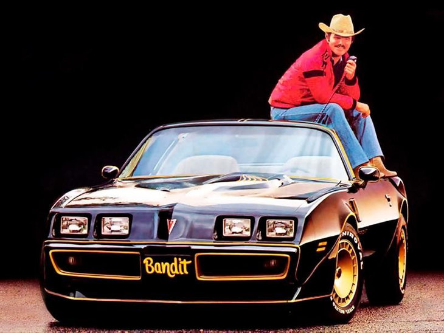
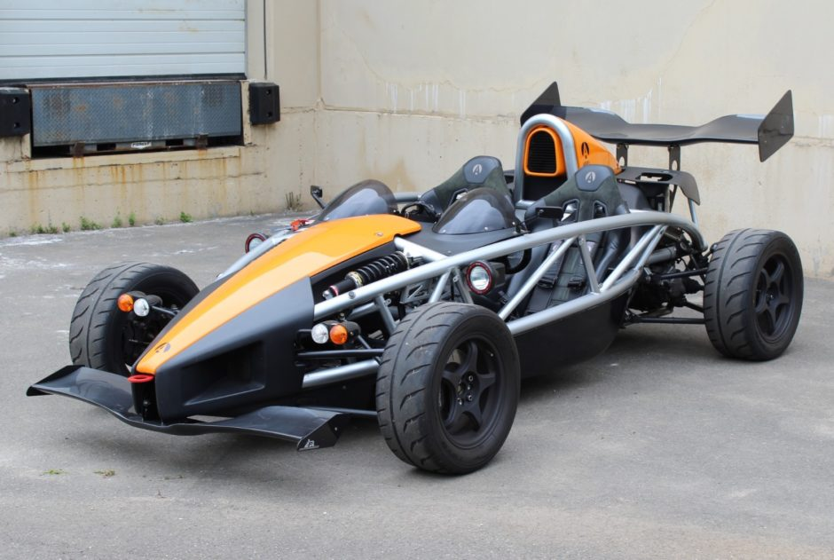

carbro
car tips

- As a responsible car owner, you should always be prepared for roadside emergencies, even if you’re driving a brand-new vehicle. Common roadside emergencies can include enduring extreme weather conditions, a dead battery, car accidents, flat tires and more. You never know when you’ll find yourself in these situations, even the most careful drivers can suffer a car breakdown.
Although roadside assistance is an option, in most situations, they won’t arrive for at least an hour or more. A roadside emergency kit should include all the items that are going to be useful for any kind of emergency, whether it’s for fixing your car or using a basic first-aid kit for injuries.
Below is a list of basic items that should be included in any roadside emergency kit, although you should tailor yours to include items that are necessary for you and your vehicle.
Jumper Cables
- Dead car batteries are the most common reasons for breakdowns on the side of the road, which is why a pair of jumper cables should definitely be included in the emergency kit.
Flashlight
- You never know when you’ll be stranded on the side of the road. If your car breaks down at night, you’ll need a handy flashlight to see in the dark.
Road Flares
-
You’ll need road flares as well so that you can alert other drivers about your position if you’re stranded in poor visibility conditions.
Basic First-Aid Kit
- It’s important to have a basic first-aid kit as well for treating minor injuries that may occur in an accident when medical help isn’t available. You can also put items like aspirin, antibiotic cream, antiseptic wipes, gauze, and bandages in the first-aid box.
Fire Extinguisher
- A fire extinguisher will come in handy if your vehicle catches on fire. Carrying a portable fire extinguisher in the trunk of your car will help in the case of flammable liquid fires or electrical fires.
Air Compressor or Tire Sealant
- Tire punctures are another common reason for break down. A tire sealant is extremely useful as it can temporarily repair the problem, till you get into town to replace the tire. You can also add air to a deflated tire with an air compressor which will allow you to temporarily fix a puncture and drive to help.
Shovel
- You never know when you may need a shovel; if you’re driving in snowy conditions or if snow is expected on the route, you can easily remove excess snow from the path if your tires get stuck.
Water Bottles
- Having your car break down is a hassle, especially in the summer time when the sun is blazing. Make sure to pack some extra water bottles to keep you hydrated if a breakdown occurs.
